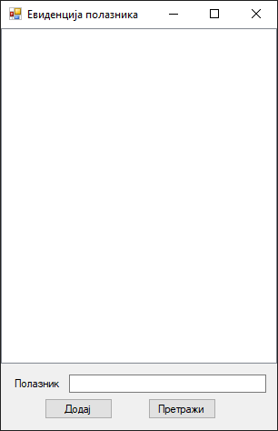
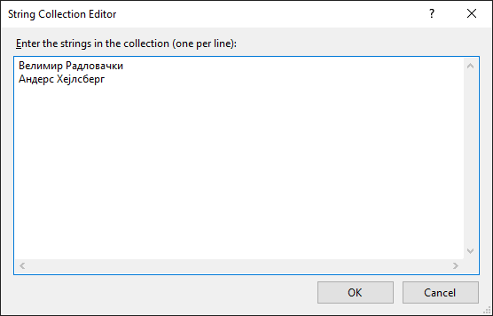
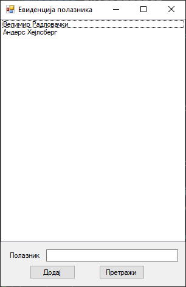
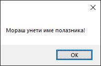
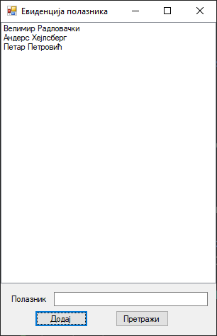
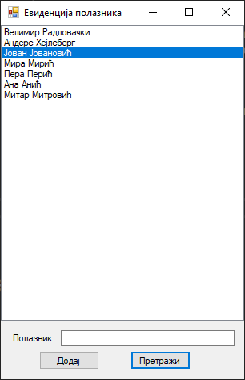
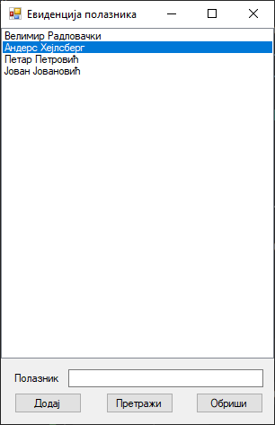
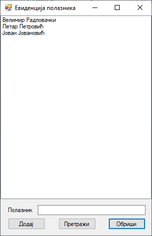
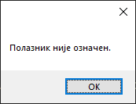

Оквир за листу¶
Контрола оквир за листу (енгл. ListBox) дефинисана је у класи ListBox у
именском простору System.Windows.Forms, односно склопу
System.Windows.Forms.dll. Класа ListBox наслеђује класу ListControl која
наслеђује класу Control, па због тога оквири за листу имају основна својства,
догађаје и методе као и остале контроле у Windows Forms App пројектима.
Детаљан опис својстава, догађаја и метода класе ListBox налази се у
званичној документацији.
Има их много и нема потребе наводити их све на овом месту.
Оквир за листу користи се за приказивање листе ставки, где корисник може да изабере једну или више ставки са листе. Оквир за листу може се користити за приказ више колона, а колоне могу садржати и слике или друге контроле.
Својства, догађаје и методе контроле оквир за листу која ћеш често користи су:
својство
Itemsкоје представља колекцију ставки које ће бити приказане у контроли,својства
SelectedIndexиSelectedItemкоја омогућавају да се прикаже или постави тренутно одабрана ставка у контроли исвојство
SelectedItemsкоје представља колекцију свих тренутно изабраних ставки.
Догађај SelectedIndexChanged који се покреће када се промени
означена ставка и методе:
Add()за додавање нове ставке у листу,Remove(),RemoveAt()иClear()за уклањање ставки са листе иFindString()за проналажење ставке на листи.
Задатак¶
Нека је задатак да креираш једноставну GUI апликацију за креирање листе полазника радионице програмирања. Иницијално, на листи треба да се налазе само имена наставника. Користећи оквир за текст и дугмад треба да омогућиш додавање нових полазника на листу и претрагу полазника на листи.
Креирај нови Windows Forms App (.NET Framework) пројекат са формом димензија 400×240, постави контроле као на слици…

…и дај им нека смислена имена.
Додавање ставки на листу¶
Да би додао ставку у току дизајна програма, у Properties прозору, у својству
Items, поред [Collection], кликни на дугме ... и унеси имена наставника,
свако у посебној линији:

Имена ће се одмах појавити на листи.

Додавање нових ставки на листу у току извршавања програма прилично је
једноставно. Кликом на дугме btnDodaj потребно је име унето из оквира за
текст додати на листу методом Add():
private void btnDodaj_Click(object sender, EventArgs e)
{
string polaznik = txtPolaznik.Text;
if (string.IsNullOrEmpty(polaznik) )
{
MessageBox.Show("Мораш унети име полазника!");
}
else
{
lsbPolaznici.Items.Add(polaznik);
txtPolaznik.Text = string.Empty;
}
}
Ако je корисник кликнуо btnDodaj, а није унео име полазника, добиће поруку…

…а ако јесте, име ће бити додато на листу:

Претрага листе¶
Једна од основних функција приликом рада са било каквим листама је свакако
претрага листе. У оквиру за листу можеш да користиш методу FindString()
како би пронашао стринг или субстринг на листи и означио резултат:
private void btnPretrazi_Click(object sender, EventArgs e)
{
string polaznik = txtPolaznik.Text;
if (string.IsNullOrEmpty(polaznik))
{
MessageBox.Show("Мораш унети име полазника!");
}
else
{
lsbPolaznici.ClearSelected();
int indeks = lsbPolaznici.FindString(polaznik);
if (indeks < 0)
{
MessageBox.Show("Полазник није пронађен.");
}
else
{
lsbPolaznici.SelectedIndex = indeks;
}
txtPolaznik.Text = string.Empty;
}
}
У догађају btnPretrazi_Click прво се проверава да ли је корисник унео стринг
за претрагу. Ако није, добија поруку о томе, а ако јесте тражи се име полазника
које одговара задатом стрингу. Ако не постоји полазник на листи који одговара
задатом стрингу, вратиће се -1, а ако постоји, вратиће се његов индекс и
означити полазник на листи. На пример, ако се унесе стринг Јован:

Оваква имплементација метода FindString() није савршена. Ако се у примеру
изнад унесе стринг Ми, вратиће се само један индекс, односно индекс првог
имена на листи које почиње са Ми (индекс 3 - обележиће се Мира Мирић),
иако се на листи налази више имена које почињу са Ми (нпр. индекс 6 -
Митар Митровић).
Брисање ставки са листе¶
Задатак би свакако требало проширити са још једним захтевом. На форми додај још
једно дугме са текстом „Обриши”. Када се означи одређени полазник на листи и
кликне дугме за брисање, означеног полазника треба уклонити са листе. Постоји
више начина за уклањање ставки са листе: методом Remove(), методом
RemoveAt() или методом Clear(), ако желиш да уклониш све ставке са листе.
Додај дугме btnObrisi и дефиниши догађај клика на дугме. Најједноставнији
начин за уклањање ставки са листе у овом случају је методом RemoveAt():
private void btnObrisi_Click(object sender, EventArgs e)
{
if (lsbPolaznici.SelectedIndex > -1)
{
lsbPolaznici.Items.RemoveAt(lsbPolaznici.SelectedIndex);
}
else
{
MessageBox.Show("Полазник није означен.");
}
}
Ако је корисник означио полазника и кликнуо на дугме btnObrisi…

…обрисаће се означени полазник на основу његовог индекса:

Ако корисник није означио полазника а кликнуо је на дугме btnObrisi, добиће
поруку о томе:

Слично, полазника можеш обрисати методом Remove() на основу његовог имена:
private void btnObrisi_Click(object sender, EventArgs e)
{
if (lsbPolaznici.SelectedIndex > -1)
{
string ime = lsbPolaznici.Items[lsbPolaznici.SelectedIndex].ToString();
lsbPolaznici.Items.Remove(ime);
}
else
{
MessageBox.Show("Полазник није означен.");
}
}
У некој конкретној апликацији користио би својство DataSource за повезивање
неке колекције података са оквиром за листу. Повезивање података са контролама
учићеш у четвртом разреду, када будеш научио више о генеричким класама и
листама.